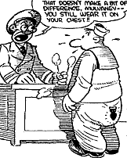

12/14/98
Mulvaney on Bomb Disposal

My dad was a US Navy bomb disposal officer during World War II. When ordnance from either side failed to explode, somebody had to dispose of it. That's what these folks did. They learned to do this by going to Bomb Disposal School at American University in Washington, DC, for 6 weeks of training during wartime.
And they had a newsletter. And the newsletter had a cartoonist. Sergeant Robert Vittur, USMCR, assigned to the staff of the Bomb Disposal School. And Sgt. Vittur found humor in this most frightening and risky of occupations.
Here are the 38 pages of a little booklet titled Mulvaney on Bomb Disposal, Supplement to Intelligence Bulletin No. 85, dated 15 September 1945. [NAVORD FORM 1697 (BDS) (g/45)] Here is a 21MB PDF of the booklet.
- Front cover
- Page 1 (Purple heart; all to pieces; fuze pocket; cow; relief; Russians.)
- Page 2 (Dogfight; obsolete; divots.)
- Page 3 (Chewning; hole; rabbit; buzz.)
- Page 4 (JATO; oil; parachute; rocket bomb; UXB.)
- Page 5 (Woo-woo; heat the fuze; holes.)
- Page 6 (Nips; carrier; turtle.)
- Page 7 (Bail out; smoke grenade; bombs away.)
- Page 8 (UXB; reduction gear; arm.)
- Page 9 (Safety pin; pilot age limit; B-29; F8F.)
- Page 10 (Fire in the hole; mobile unit; native; ashtrays.)
- Page 11 (Running nose; outhouse; snake charmer; pigs.)
- Page 12 (Coin toss; unlocked; barrel; timbering.)
- Page 13 (Missed it; darndest dream; rocket wrench.)
- Page 14 (Jack-in-the-box; detonators; flak; V-2; anticipating.)
- Page 15 (Outhouse; bulletin; pressure; bed; dustpan.)
- Page 16 (Christmas poem; rocket poem; fishing.)
- Page 17 (Seabee; dysentery; outhouse.)
- Page 18 (Shaped charges; bow & arrow; natives.)
- Page 19 (Big bomb.)
- Page 20 (Ordnance inspection; bathtub; suicide bomb.)
- Page 21 (Walked away; nose fuze; native; propeller head; rome.)
- Page 22 (Probe; bulletin; tape; wench; retriever.)
- Page 23 (Remote control; canoe; new fuze; pied piper.)
- Page 24 (Seal; shaft; sneeze; rabbits/robots.)
- Page 25 (Customs; slug; probe; secure; paper bag.)
- Page 26 (Bulletin; Japanese; pickax; hydrant; safe.)
- Page 27 (Don't force it; relief; pants; needle striker.)
- Page 28 (Flying carpet; anti-withdrawal; fishing; tug of war.)
- Page 29 (Varicose vane; 37; jeep; safety period; souvenirs; firecracker.)
- Page 30 (The Vicious Cycle.)
- Page 31 (Hoist; vulture mascot; Herr Schnopps; securing gear; diver.)
- Page 32 (Fish; geronimo; general porpoise; blanket; radio control.)
- Page 33 (Shaft; shovel; hatchet.)
- Page 34 (Pushing; safe cracking; bomb hoist.)
- Page 35 (Barracks scene.)
- Page 36 (Record everything; damaged house.)
- Page 37 (Mulvaney brings in a new bomb.)
- Page 38 (Securing time; atoms.)


The inside front of the booklet reads as follows:
U.S.NAVY BOMB DISPOSAL SCHOOL
American University
Washington, 16, D.C.
16 September 1945
SUPPLEMENT TO USNBDS Intelligence Bulletin #85
1. For their instructional value and as a boost to the
morale of the Bomb Disposal Units in the field, the cartoons pre-
viously printed in subject publication have been compiled for
publication as a supplement to the Bomb Disposal Intelligence
Bulletin.
2. This document is issued to graduates of a course in
Bomb Disposal, by the Officer in Charge, Navy Bomb Disposal School,
under authority of Bureau of Ordnance letter F41-6(L) of 22 April
1944. It is for information and guidance only and is not a Bureau
of Ordnance Publication.
3. Techniques and methods of attack illustrated in this
publication are known to be adequate under normal conditions; how-
ever, Bomb Disposal personnel are enjoined to exercise particular
discretion in employing or deviating therefrom under conditions
other than normal. Bomb Disposal personnel are cautioned that
in disposing of explosive ordnance, there is no "safe" method but
merely a least dangerous method.
4. The cartoons contained in this publication originated
from the pen of Sergeant Robert Vittur, USMCR, assigned to the
Staff of the Bomb Disposal School.
5. This supplement is the concluding chapter to all pub-
lications issued by this school to its personnel during the course
of World War II.
/s/
J. P. DAVID
Lieut. Comdr., USNR
Officer in Charge
My dad attended Class 1a at the Naval Bomb Disposal School at Washington Navy Yard from 23 Jan 1942 - 15 Mar 1942 and was Chief Instructor at the school from March to May 1942. Then he was sent to Pearl Harbor to organize a bomb disposal unit to be sent to islands in the Pacific. He served in Samoa and Guadalcanal as a bomb disposal officer. Then he served on the USS New Jersey starting in June 1943 as a Lieutenant in the Fourth Division. His battle station was operating a "MK 37 director" for the 5inch guns; he was also the Bomb Disposal Officer.
People interested in Explosive Ordnance Disposal should check out
Copyright (c) 1995, 1998 by Tom Van Vleck